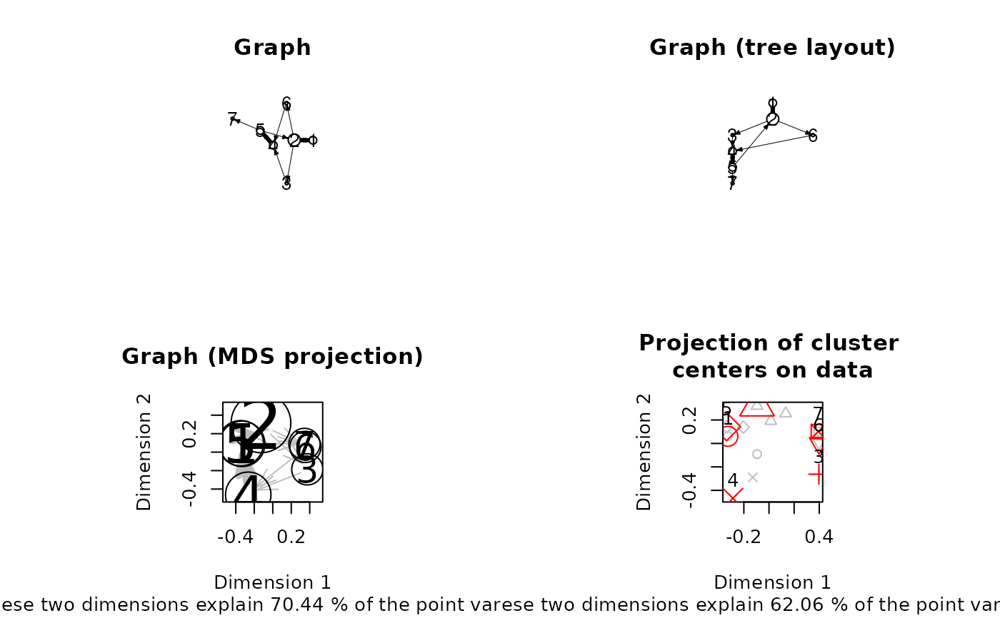

Visualize EMM objects.
Usage
# S4 method for class 'EMM,missing'
plot(
x,
y,
method = c("igraph", "interactive", "graph", "MDS", "cluster_counts",
"transition_counts"),
data = NULL,
parameter = NULL,
...
)Arguments
- x
an
EMMobject.- y
unused (just for compatibility with the generic for plot in graphics)
- method
see details section.
- data
Project the state centers onto these data. Points which do not belong to any cluster are shown in blue.
- parameter
a list of parameters for plotting (see Details section).
- ...
further arguments passed on to
plot.defaultorplot.igraph.
Details
There are several methods for plotting:
"igraph" produces a graph representation of the EMM using igraph.
Additional arguments like layout are passed on to plot for igraph.
"interactive" produces an interactive graph representation of the EMM (using igraph).
Arguments suitable for plot.igraph in igraph can be
passed on as ....
"graph" produces a graph representation of the EMM using Rgraphviz.
If Rgraphviz is not installed/available then the method reverts to
"igraph".
"MDS" projects the cluster centers into 2-dimensional space.
"cluster_counts" produces a barplot for cluster counts.
"transition_counts" produces a barplot for transition counts.
The following plotting parameters are currently supported (by some of the visualizations):
- state_counts
represent state counts by vertex size? (default:
TRUE)- arrow_width
represent transition counts/probabilities by arrow width? (default:
TRUE)- arrows
use
"counts"or"probabilities"for arrow width. (default: "counts")- arrow_width_multiplier, state_size_multiplier
Controls the variation of vertex sizes and edge widths (default: 1).
- add_labels
add labels for centers (n/a for
type = "graph").- cluster_labels
cluster labels to use instead of 1,2,....
- mark_clusters
Use different markers for points depending on the state they belong to (only available for MDS when
datais specified).- draw_threshold
draw a circle around state centers to indicate the area in which points are assigned to the cluster (experimental, only available for MDS when
datais specified).- mark_states, mark_state_color
a vector of state names to be marked and the color(s) used for marking (default: red).
- mark_transitions, mark_transitions_color
a vector of transition names in the format "3->2" to be marked and the color(s) used for marking (default: red).
For some plots (e.g., "igraph") ... is passed on to the
primitive plotting function and can be used to change the plot (colors, etc.)
See ? igraph.plotting.
For "graph" the two special parameters "nAttrs" and "eAttrs"
for node and edge attributes can be used.
Examples
data("EMMTraffic")
emm <- EMM(threshold = 0.2,
measure = "eJaccard",
data = EMMTraffic)
op <- par(mfrow = c(2, 2), pty = "s")
plot(emm, main = "Graph")
## Plot the graph as a tree with a set root node and an aspect ratio of 1:1.
g <- as.igraph(emm)
plot(emm, main = "Graph (tree layout)",
layout = igraph::layout_as_tree(g, root = 1), asp = 1)
plot( emm, method = "MDS",
main = "Graph (MDS projection)", xlim = c(-0.5, 0.5), ylim = c(-0.5, 0.5)
)
plot(emm, method = "MDS", data = EMMTraffic,
main = "Projection of cluster \ncenters on data")

par(op)